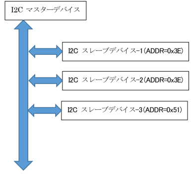
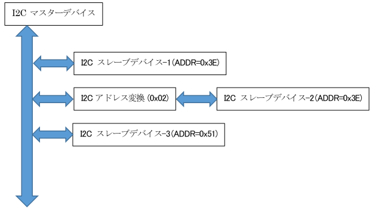
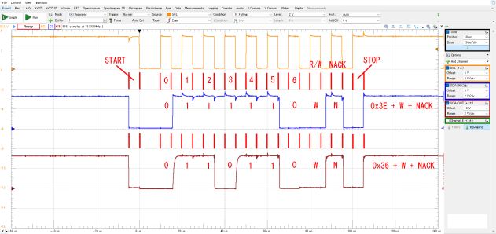

HDL4316G と HD-AK4316 の動作について
HDL4316G と HD-AK4316 は、どちらも Analog Devices社製の
LTC4316 を利用してI2Cデバイスのアドレス変換を行います。 基本的に同じ機能で、同じ使い方をします。
ここでは、まとめて説明します。このページでは 特に断りがないかぎり HDL4316G と
HD-AK4316 共通で、まとめて HD-AK4316 と表記します。違いがある場合は、その旨を記載します。
HD-AK4316は、スレーブ側にあるデバイスのアドレスを異なるアドレスに変換します。 この結果、I2Cバスに接続する
スレーブデイバスのアドレスが固定されている場合や、設定が可能でも、同時接続したい個数が設定可能なアドレス数より多い場合などでも
ひとつの I2Cバスを共有できるようになります。
I2Cバスについて
まず、I2Cバスについて、かんたんにおさらいをします。
I2Cバスは、すべてのデバイスで、2本の信号線、SCLおよび SDAを共有してバス型で接続されます。接続に使うのは、この2本だけの
簡単なバス構成をしています。
通信はすべて、ホスト側から行います。スレーブデバイス側から通信を要求することはできません。
ホストデバイスが スレーブデバイスにI2Cバスを通してアクセスするときは、ホスト側から (通常は) ひとつのアクセスしたい
スレーブデバイス側の固有アドレスを指定して行います。そして指定されたスレーブデバイスだけが応答を行い、ホストデバイスと通信を行います。
指定されなかったデバイスは、なにも反応しない状態を保つことになります。
従って、I2Cバスにおいてスレーブデバイス側のアドレスは、個々のデバイスを一意に指定するものになります。同一バス上でスレーブアドレスを
重複させることができません。
しかし、メモリやセンサ、ディスプレイなど I2Cスレーブデバイスのアドレスが固定であったり、変更可能なアドレスの値が限られている
場合があります。例えば、あるディスプレイで、アドレスの値が固定かつ変更できない場合、同じバスに 2つ以上のディスプレイが
接続できないことになります。
例え、アドレスの値が変更できても、選択できるアドレスの値がほかのスレーブデバイスと重複する場合も同じバスに接続できません。
このような場合、スレーブアドレスが重複する場合の解決方法としては、下記のような解決策が考えられます。
- I2Cバススイッチ(マルチプレクサ) を利用し、利用するデバイス毎にバスを切り替える
- SDAまたは SCLとSDAの両方について、利用するデバイス毎に接続・切断を切り替える
- スレーブデバイスのアドレス変換回路を挿入する
最初の 2つの方法は、これまでも広く使われてきました。そして、HD-AK4316は Analog Devices社製のLTC4316を用いて、
上記の第3の方法、シンプルにスレーブデバイスのアドレスを変更する解決策を提供します。
ほかの2案は、追加の配線作業が必要になったり、目的のデバイスにアクセスするまえに、バスの切り替えや SDA/SCLの接続・切り離し
などの操作が必要になります。(実現方法により異なります)
同じアドレスのまま、前処理が必要になり、手順を誤ると、目的とは違うデバイスにアクセスしてしまいますが、
デバイスのアドレスが同じであるために、別のデバイスが応答し、一見正常に動作しているように見えてしまいます。
HD-AK4316 でアドレス変換すれば、個別の新しいアドレスを割り付けることができ、追加の配線や手順は必要なくなります。
また、アドレスが異なるため、目的でないデバイスが応答してしまうことも避けることができ、シンプルに解決できるはずです。
I2Cバスでアドレス重複がある状態

上の図は、I2Cバスに 1つのホストデバイスと 3つのスレーブデバイスを接続したときの様子を示しました。
図の中の スレーブデバイス-1 と スレーブデバイス-2 は、ともに 0x3E というアドレスを持っており、
スレーブデバイス-3 は 0x51 というアドレスを持っていたとします。
スレーブデバイス-3 については、重複するデバイスが他にありませんから、ホストデバイスは、スレーブデバイス-3 と
問題なく通信をすることができます。しかし、スレーブデバイス-1 と スレーブデバイス-2 は、アドレスが同じであるため、
どちらとも正しく通信が出来なくなります。
アドレス変換を入れた状態

そこで、上の図のように スレーブデバイス-2 には、I2Cバスと スレーブデバイス-2 の間にアドレス変換基板を入れます。
このアドレス変換の基板が HD-AK4316 になります。 HD-AK4316 の完成品から選ぶ場合、アドレス変換値の種類は、0x02 (HDL4316G-02),
0x04 (HDL4316G-04), 0x08 (HD-AK4316-08) の 3種類の中から選ぶことが出来ます。基板上の抵抗を付け替えれば、
他のアドレス変換値にすることも出来ます。 また HD-AK4316 でなくても、他の完成品などでも構わないでしょう。
ここでは、HD-AK4316-08 基板を使い、変換アドレスに 0x08 に設定されている場合を想定します。
この図のようにすると、スレーブデバイス-1 は、0x3E のアドレスで応答し、スレーブデバイス-2 は、0x08 と排他論理和で
得られた 0x36 のアドレスで応答するようになります。
スレーブデバイス-2 について、もう少し詳しく説明します。ホストデバイスが スレーブデバイス-2 にアクセスするために、
0x36 を指定します。すると、このアドレスは、I2Cバスに繋がっている他のデバイス、スレーブデバイス-1と スレーブデバイス-3
にも伝えられます。しかし、これらのデバイスは自身に割り当てられているアドレスと一致しませんから、なにも応答しません。
そして スレーブデバイス-2 の前に取り付けられたアドレス変換基板 HD-AK4316-08 は、送信されてきた 0x36 と排他論理和を
行います。その結果は、0x3E になりますので、0x3Eを スレーブデバイス-2 に送信します。スレーブデバイス-2 は、
自身に割り当てられた 0x3E と一致するので、ホストに対し、応答します。また、ホストデバイスが スレーブデバイス-1の
ために 0X3E を送信したときは、アドレス変換基板 HD-AK4316 は、排他論理和を行った 0x36 をスレーブデバイス-2 に
送信するため、スレーブデバイス-2 は応答しなくなります。
このようにして、スレーブデバイスアドレスの重複を解決します。
I2Cバスの波形

実際に HD-AK4316-08 を入れて、I2Cバスの波形を観測していました。 ここでは 0x3E のアドレスを 0x08 で排他論理和を取り、
スレーブデバイス側に 0x36 のアドレスが送信されている様子がわかります。
上から SCL(橙), SDA-IN(青), SDA-OUT(茶) の順に並んでいます。なお、図中の 赤い文字は、観測結果をわかりやすく
するために、書き足したものです。
まず、STARTコンディションが開始されたあと 7bit のデバイスアドレスが送信されます。デバイスのアドレスは MSB側から、
LSB側に順次送信されますので、ビットパターンは 0111110 になります。その後、このアクセスでは R/W 要求のビットに続いて
スレーブからの応答と続きます。 SCLにあわせてSDA-INが動いているのがわかります。
0x08 と排他論理を行うと、アドレスは 0x36 になります。 ビットパターンは 0110110 になり、これが SDA-OUTから出力
されています。 今回は、デバイスを接続していませんでしたので、最後に NACK が検出されていますが、送信するアドレスは、
変換されているのが、わかると思います。
アドレス変換時の注意事項
このように、簡単にアドレスを変更できますが、変更するアドレスは、なんでもいいわけではない点にも注意が必要です。
ここで注意しなければいけないことは、変換前のマスタデバイスが指定するアドレスが、同じバスにある他のデバイスと重複しては
いけない、という点です。 先の例で言えば、0x36 というアドレスを持つデバイスが同じバスに接続することはできません。
もともと 0x36 というアドレスを持つデバイスと、変換基板で変換した 0x36のデバイスが同時に応答しようとするからです。
デバイスのアドレスは、すべてが異なるアドレスを持つようにする点は、かわりません。
AnalogDevices社製のアドレス変換IC
AnalogDevices社製の アドレス変換ICは、以下の 3つの種類があるようです。 HDL4316G, HD-AK4316 では、LTC4316を使っています。
| LTC4316 | 1チャンネル入力、1チャンネル出力 |
| LTC4317 | 1チャンネル入力、2チャンネル出力 |
| LTC4318 | 2チャンネル入力、2チャンネル出力 |
そのほか、動作の詳しい内容については、Analog Devices社から発行されている LTC4316のデータシートを参照してください。
Copyright 2024 (C) By HardwareDreams